CITY HOLD — effecten en figuren
Statische PNG-assets. Figuren zijn bouwreferenties; geen geanimeerde modellen.
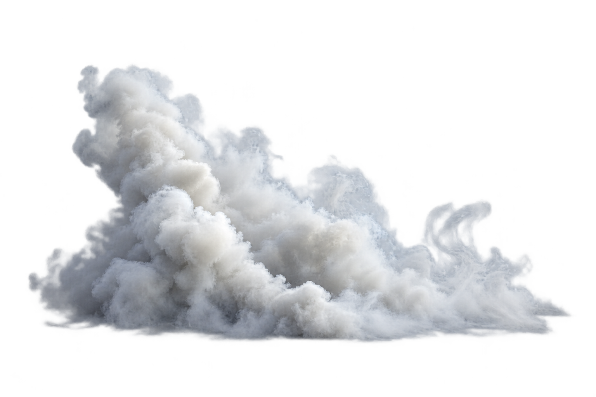
Traangaswolk · vfx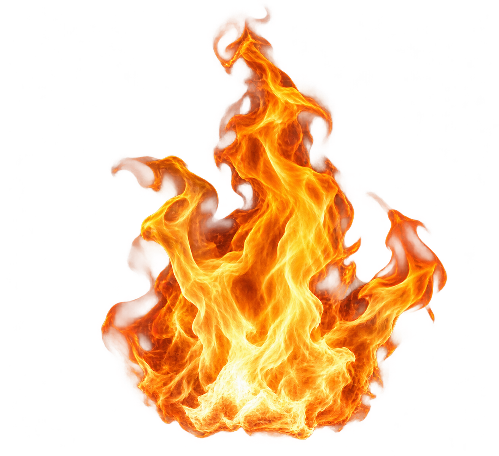
Vuur · vfx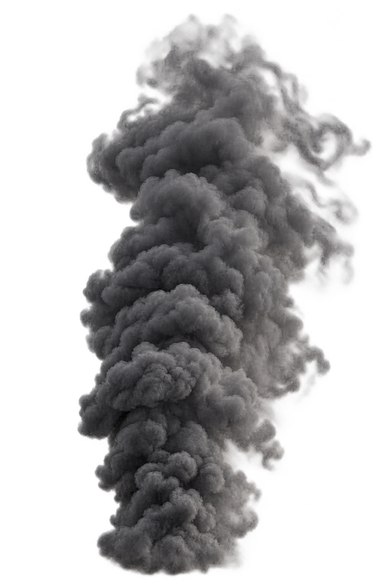
Donkere rook · vfx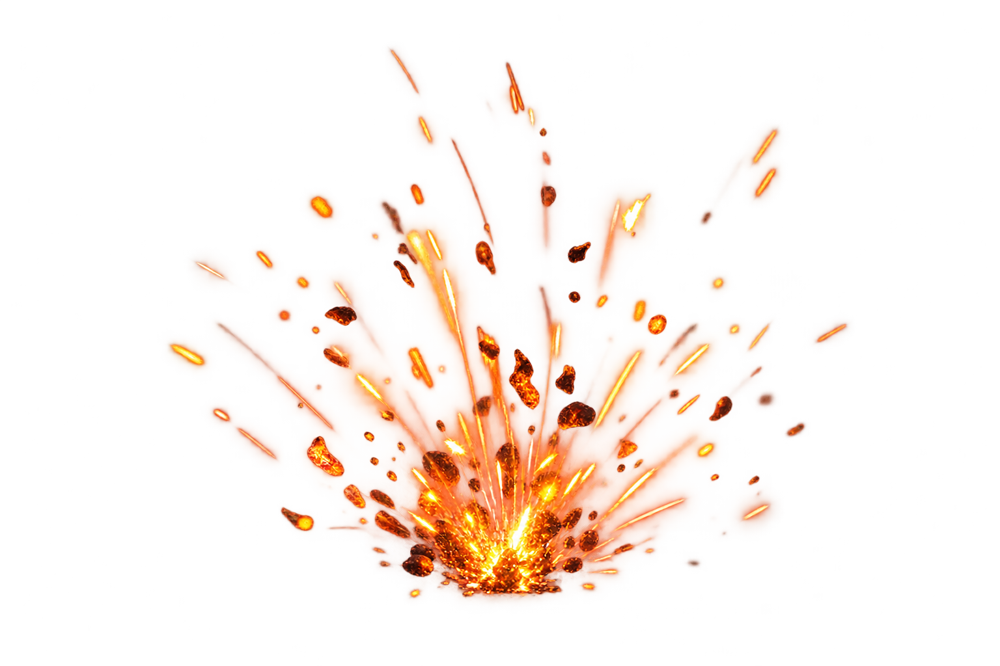
Vonken · vfx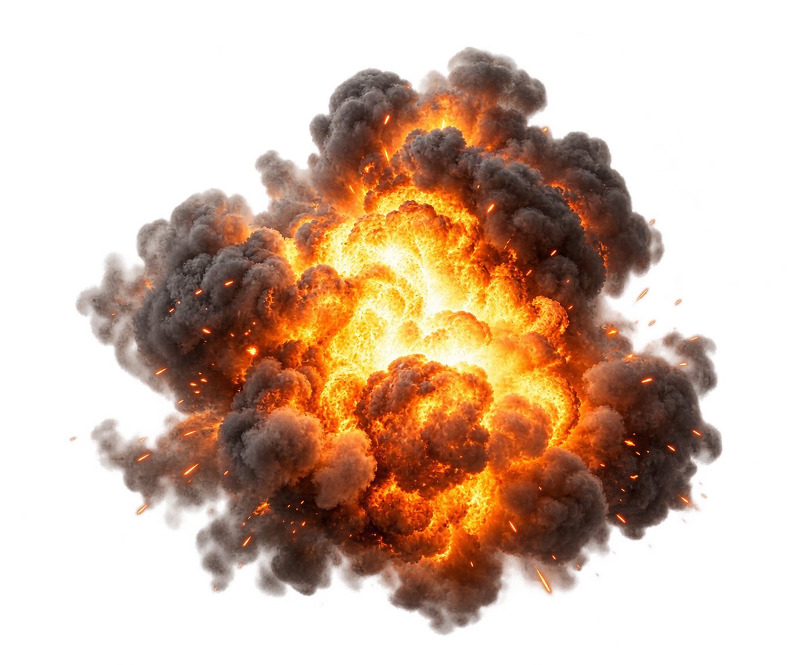
Explosie-effect · vfx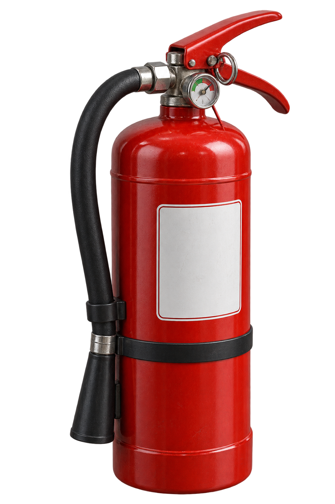
Brandblusser · prop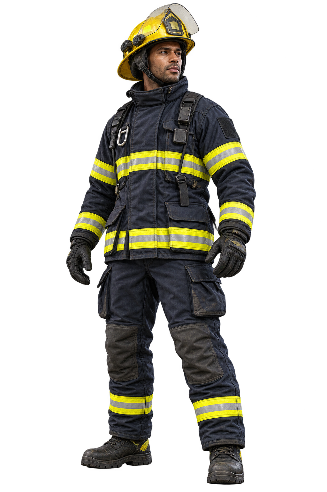
Brandweer · character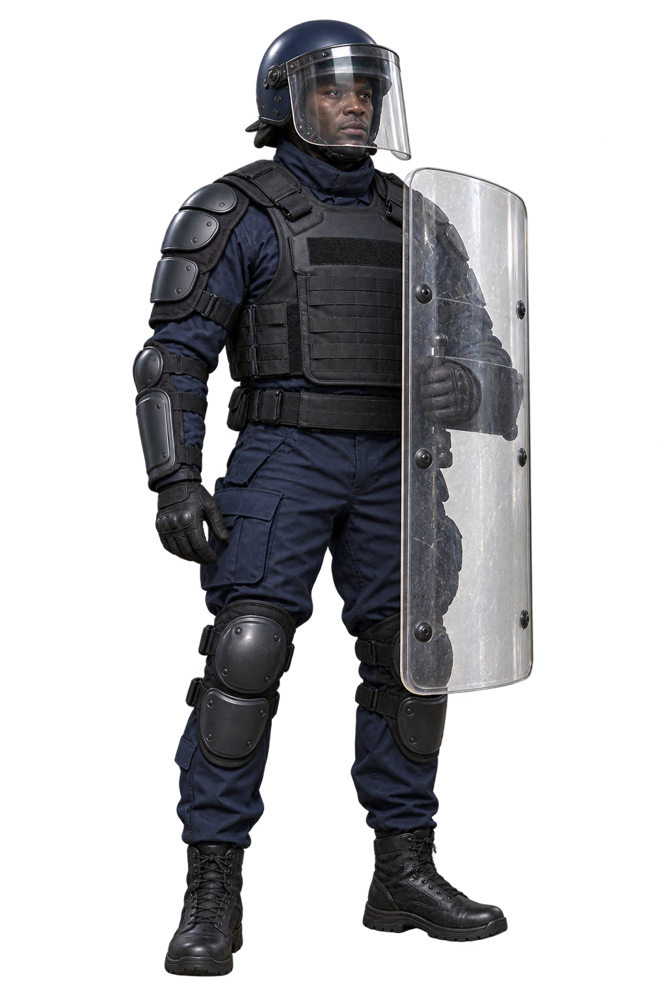
Schildagent · character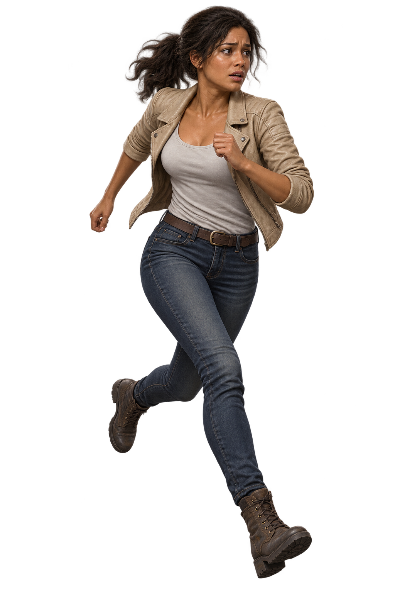
Vluchtende burger · character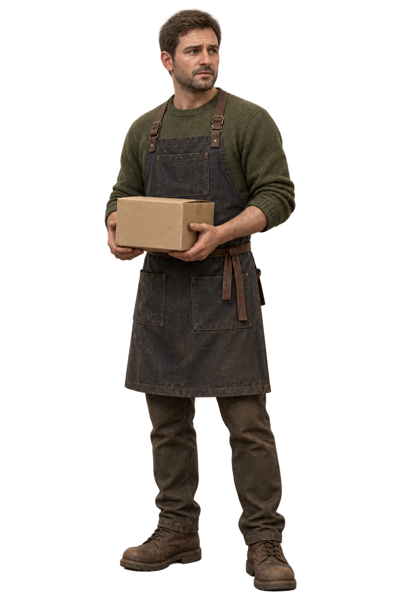
Winkelier · character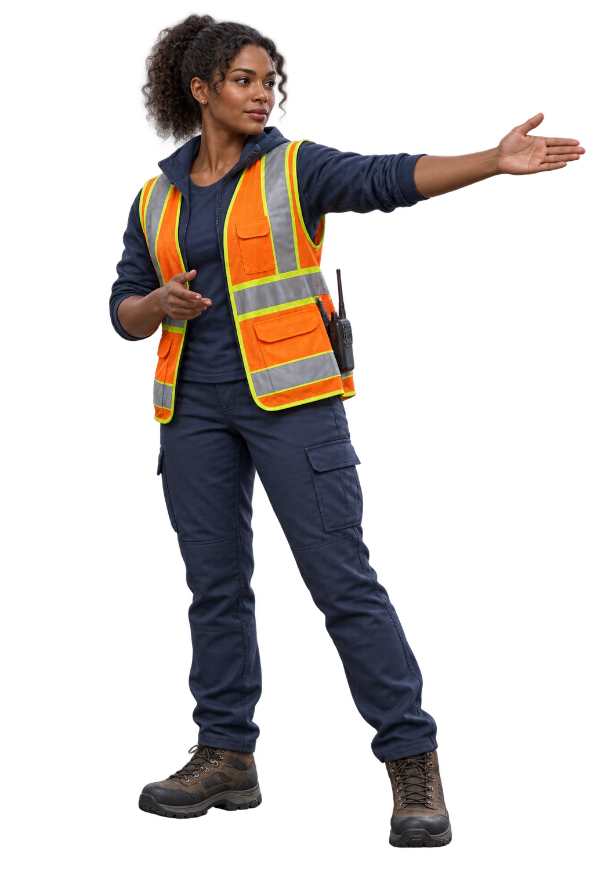
Hulpverlener · character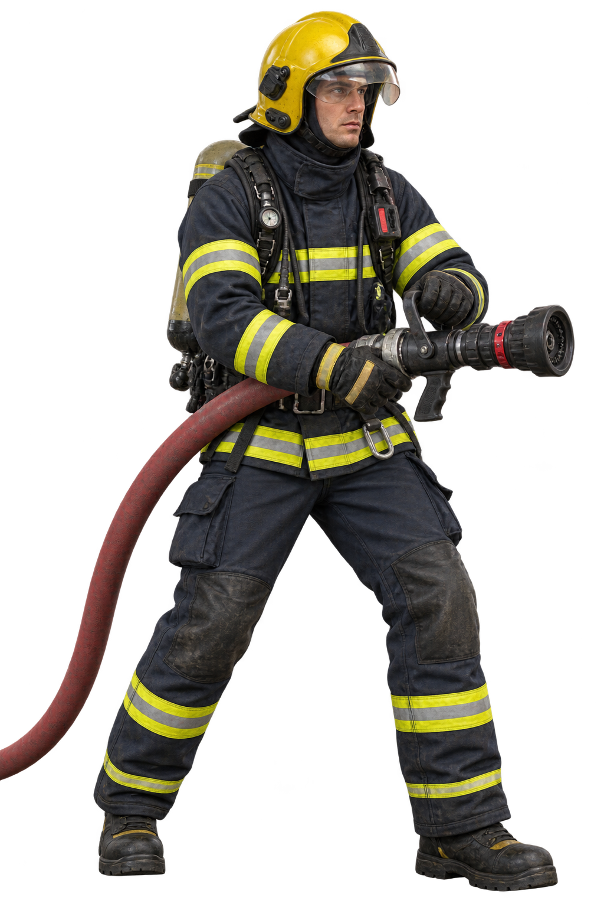
Brandweer met slang · character